Key Takeaways
- Admins can disable editing of Quick Settings.
- Users cannot add, remove, or rearrange quick settings buttons.
- The Edit quick settings option can be removed from the right-click menu.
- Keeps quick settings consistent and gives administrators better control.
Hey, let’s discuss about how to Prevent Users from Editing or Customising Quick Settings in Windows using Intune. The Disable Editing Quick Settings policy prevents users from changing the Quick Settings panel in Windows 11. When enabled, users cannot add, remove, or rearrange options such as Wi-Fi, Bluetooth, or Battery Saver. This keeps the Quick Settings layout the same for everyone.
Table of Contents
Disable Quick Settings Editing in Windows with Microsoft Intune
This policy helps administrators maintain a consistent and organized system. It prevents accidental changes and ensures important settings cannot be removed. It is especially useful in workplaces where IT teams need better control over system settings.
How to Create a Policy
To configure this policy, first sign in to the Microsoft Intune Admin Center. Once you are signed in, navigate to Devices, then open the Configuration section. Click Create, and from the available options, select New policy to start creating and configuring the policy.

Create a Profile
The next step in creating the disable editing quick settings policy is to create a profile. Select Windows 10 and later as the platform and choose Settings catalog as the profile type. After selecting these options, click Create to continue.
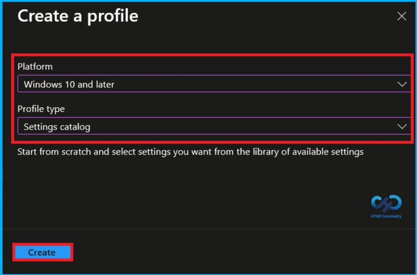
Basic Tab of Disable Editing Quick Settings
To begin configuring the policy in Intune, start with the Basics step. Enter the policy name as Disable Editing Quick Settings and provide a brief description as To Disable Editing Quick Settings to describe the purpose of the policy. The platform is already set to Windows. Click Next to continue.
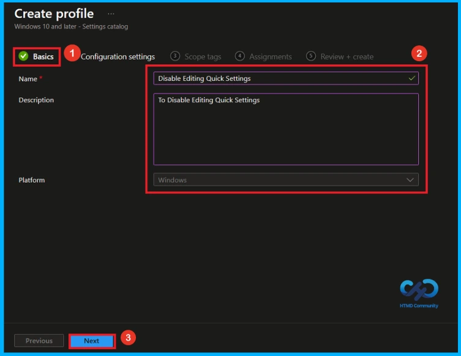
Configure Disable Editing Quick Settings Policy
On the Configuration settings tab, click Add settings to open the Settings picker. From the available settings, select the Start category or use the search bar to search for Disable Editing Quick Settings. From the search results, select the Disable Editing Quick Settings policy to add it to the configuration.
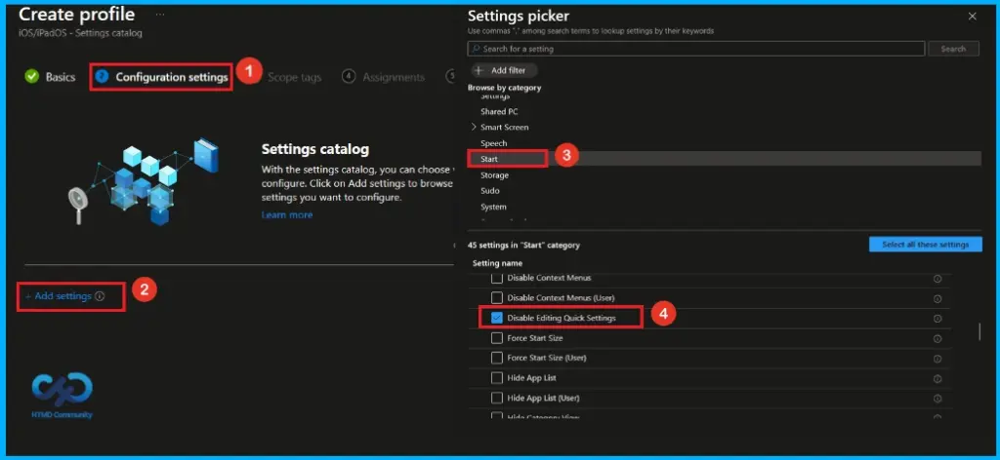
Enable Editing Quick Settings
After closing the Settings picker, the selected Disable Editing Quick Settings policy appears on the Configuration settings page. Here, the Disable Editing Quick Settings option is displayed with a toggle to Enable editing Quick Settings. Keep the toggle turned off to enable users from editing Quick Settings, then click Next to continue.
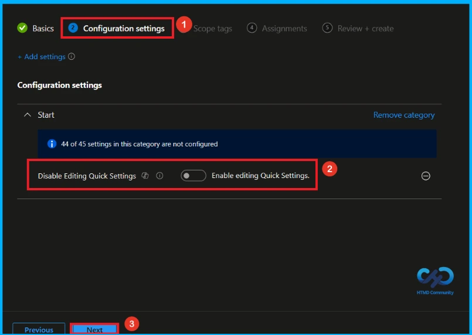
Disable Editing Quick Settings
You can change the Disable Editing Quick Settings option by clicking the toggle next to Enable editing Quick Settings. Turn the toggle on to disable users to edit Quick Settings. After enabling the option, verify the setting and click Next to continue with the policy configuration.
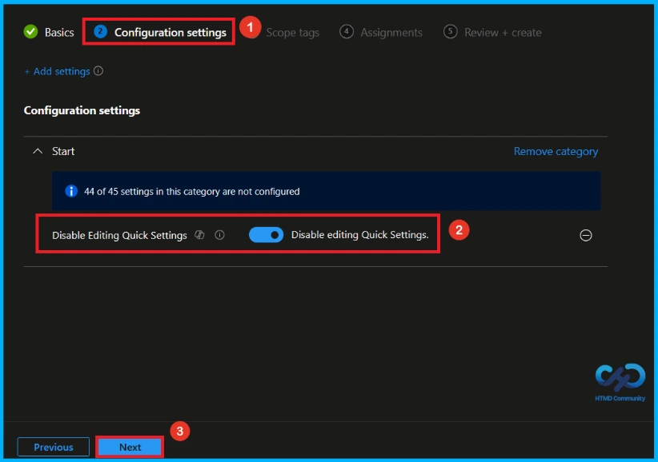
What is Scope Tag
A Scope Tag in Intune is used to control the visibility and access of Intune resources based on administrative roles. Scope tags are optional. You can add a scope tag by clicking the Select scope tags button. Here, i selected Landon as the scope tag. Click Next to continue.
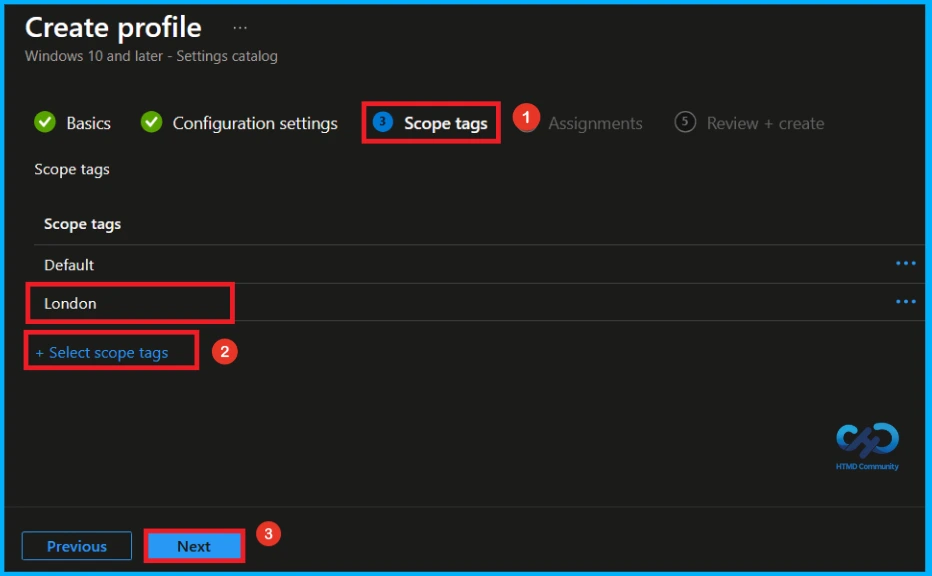
Assignment Tab of Editing Quick Settings Policy
On the Assignments tab, you can select the users or devices that will receive the policy. Under Include groups, click Add groups and choose the group from the list, such as HTMD – Test Policy. After selecting the group, click Next to continue.

Final Step of Disable Editing Quick Settings Policy Creation
At the final Review + Create step, review all the configured settings to ensure that the policy is set up correctly. If any changes are required, click Previous to go back and update the settings. Click Create to complete the policy configuration. A notification will then appear confirming that Disable Editing Quick Settings created successfully.
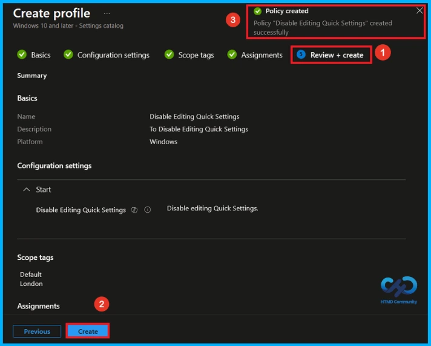
Device and User Check-in Status
To check the policy status in the Intune Portal, go to Devices > Configuration and select the Disable Editing Quick Settings policy. It may take up to 8 hours for the policy to apply. You can use the manual sync option in the Company Portal app on the device to speed up the process, then check the policy status again.
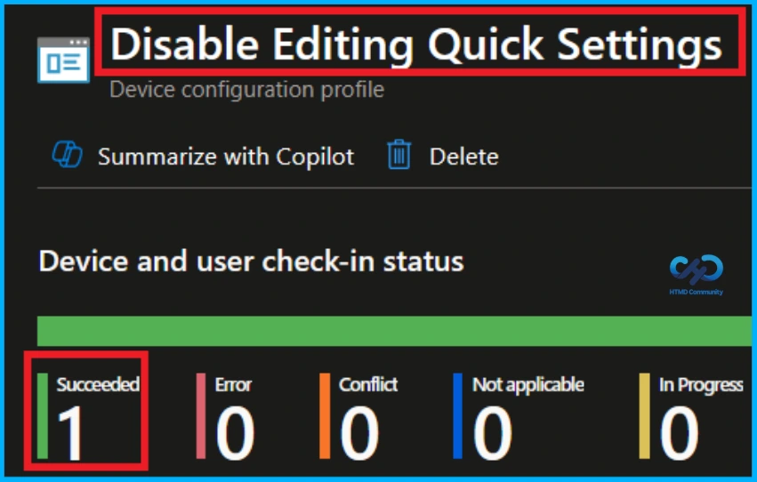
Client Side Verification
To confirm if a policy has been applied, use the Event Viewer on the client device. Go to Applications and Services Logs > Microsoft > Windows > Device Management > Enterprise Diagnostic Provider > Admin. Use the Filter Current Log option and search for Intune event 813.
MDM PolicyManager: Set policy int, Policy: DisableEditingQuickSettings Area: (Start),
EnrollmentID requesting merqe: (EB427D85-802F-46D9-A3E2-D5B414587F63), Current User:
(Device), Int: (0x1), Enrollment Type: (0x6), Scope: (0x0).
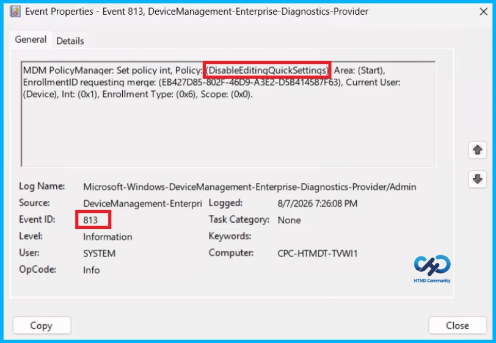
Windows Configuration Service Provider (CSP)
The policy Configuration Service Provider (CSP) is a tool for businesses to manage settings on Windows 10 and 11 devices. It details each policy’s function (Description Framework Properties), Group Policy Mapping details and allowed values.
Description Framework Properties
- Format – Int
- Access Type – Add, Delete, Get, Replace
- Default Value – 0
Allowed values:
| Value | Description |
|---|---|
| 0(Default) | Enable editing Quick Settings |
| 1 | Disable editing Quick Settings |
Group policy mapping:
| Name | Value |
|---|---|
| Name | DisableEditingQuickSettings |
| Friendly Name | Disable Editing Quick Settings |
| Location | Computer Configuration |
| Path | Start Menu and Taskbar |
| Registry Key Name | Software\Policies\Microsoft\Windows\Explorer |
| Registry Value Name | DisableEditingQuickSettings |
| ADMX File Name | StartMenu.admx |
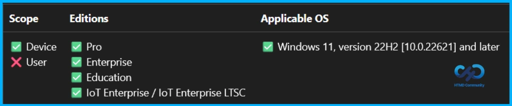
How to Remove Assigned Group from Disable Editing Quick Settings
To remove a group from the Disable Editing Quick Settings policy assignment, open the policy from the Configuration tab. Go to the Assignments tab, click Edit, and select Remove to delete the assigned group. Once the group is removed, click Review + Save to apply the changes.
For detailed information, you can refer to our previous post – Learn How to Delete or Remove App Assignment from Intune using by Step-by-Step Guide.
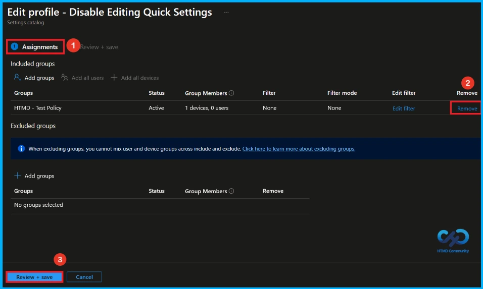
How to Delete Disable Editing Quick Settings from Intune
To delete an Intune policy for security or operational reasons. It is simple to do. I will demonstrate how to delete an Intune policy through the Disable Editing Quick Settings Policy. Click the three dots, then click the Delete option.
For detailed information, you can refer to our previous post – How to Delete Allow Clipboard History Policy in Intune Step by Step Guide.
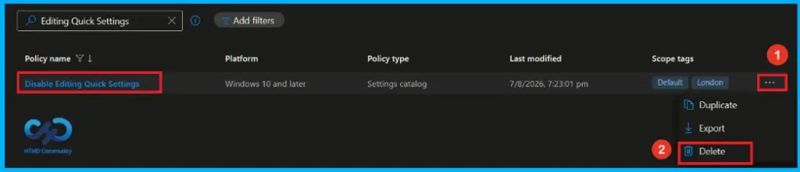
Need Further Assistance or Have Technical Questions?
Join the LinkedIn Page and Telegram group to get the latest step-by-step guides and news updates. Join our Meetup Page to participate in User group meetings. Also, join the WhatsApp Community and the Whatsapp channel to get the latest news on Microsoft Technologies. We are there on Reddit as well.
Author
Anoop C Nair is Workplace Technology solution architect with 25+ years of experience in global enterprise organizations such as JP Morgan, Capgemini, etc. He is Microsoft Certified Trainer. Microsoft MVP from 2015 onwards for consecutive 11 years! He also conducts Intune and modern workplace tech training for enterprise organizations. He is Blogger, Speaker, and Founder of HTMD Community and HTMD Conference. His focus is on Device Management technologies such as Intune, Windows, Cloud PC. He writes about technologies like Intune, SCCM, Windows, Cloud PC, Windows, Entra, Microsoft Security.